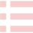

星図
HOME
Loading...
北緯35° 東経135°
2024年1月1日 12:00
中心:
赤経0h 赤緯0°
視野:
90°
最微等級:
11.5

基本設定
表示設定
高度な設定
場所/日時
時刻:
現在時刻
視点:
太陽
水星
金星
地球
火星
木星
土星
天王星
海王星
月
Ceres
Vesta
観測地:
カスタム
現在地
京大西部構内
鵜倉園地
乗鞍高原
仙台
東京
大阪
石垣島
地図上で選択
緯度:
北緯
南緯
°
経度:
東経
西経
°
表示設定
表示モード:
赤道座標系（正距方位図法）
プラネタリウム
ライブ
風景と重ねる
最微等級:
リアルタイム表示:
オフ
赤経・赤緯固定
方位・高度固定
ダークモード:
グリッド表示:
中心表示:
天体
恒星:
恒星名表示:
なし
1等星まで
2等星まで
すべて
星座
星座名:
星座線:
太陽系天体
惑星・小惑星・彗星:
その他の天体
メシエ天体:
おすすめ天体:
NGC・IC天体:
画角
なし
R200SS-CMOS
FS128-CMOS
85-CMOS
高度な設定
設定を初期化
OK
メニュー
これを開いたボタンで閉じます
閉